Additive animation
Warning
Приносим свои извинения за неудобства. Для этой страницы нет перевода на русский язык. Она будет отображаться на английском языке.
Intermediate Designer
Additive animation is the process of combining animations using difference clips (also known as additive animation clips).
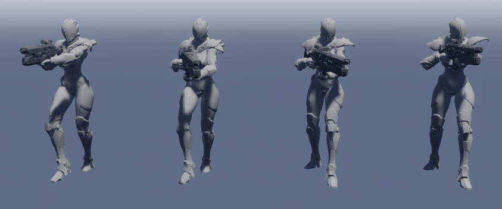
In the example above, the leftmost animation is the Walk animation. The rightmost animation is the Idle animation. The two animations in the center are the Walk and Idle animations respectively, but have the Reload animation added to them.
This means we only had to create three animations: Walk, Idle, and Reload. Additionally, we can add the Reload animation to other suitable animations (eg Crouch, Strafe or Run). This helps keep the memory budget and number of animations low.
Difference clips
A difference clip describes the difference between two animation clips: a source and a reference.
Take the Reload animation above, which we want to add to other animation clips. This is our source clip (S). Because the Reload animation mainly involves the arms, it will blend well with animations that don't involve the arms (such as idling and crouching). We can use one of these animations — let's say the Idle animation — as our reference clip (R).
Stride calculates the difference between the source and reference clips to create the difference clip (D). The difference clip encodes the difference between the source and reference clips. We can express it as D = S - R.
We can use use the difference clip to blend the source and reference animations. We can also use the same difference clip to blend the source animation with other animations. If the animation you add it to is sufficiently similar to the original reference clip, then the animations blend effectively. For example, you could use it to add the reload animation to any animation that doesn't use the arms, such as crouching.
Note
Additive animations should use the same skinned mesh and skeleton.
Create a difference clip
In the Asset View (at the bottom by default), click Add asset and select Animations > Animation. A browser dialog opens.
As we don't need a source for this animation, click Cancel.
Game Studio asks if you want to create an animation without a source file.

Click Yes. Game Studio adds a new empty animation asset to the Asset View.
Give the asset a name that makes it easy to identify. For example, if you want to make a reload animation that can be used with other animations, you could name the asset ReloadAdditive.
In the Asset View (bottom pane by default), select the animation asset you created.
In the Property Grid (on the right by default), add the Source animation clip. This is the animation you want to apply to other animations.
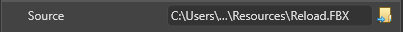
Note
Make sure you add the file that contains the animation itself (eg a model file such as .fbx), not the animation asset that references it. Animation files are usually saved in the Resources folder.
Under Type, choose Difference Clip.
Under Reference, specify the animation you want to use as your reference clip. This is the animation Stride references to create a difference clip.
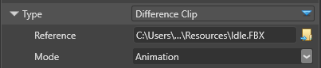
Choose the Mode from the drop-down menu.
- Animation creates a difference clip from the entire source animation, referencing it frame by frame.
- FirstFrame creates a difference clip from only the first frame of the source animation, as a still pose.
Next to Skeleton, specify a skeleton for the difference clip.
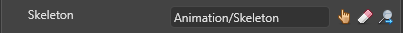
This should be a skeleton that works for all the animations you want to blend with the difference clip. In most cases, you should use the same skeleton you used for the source and reference animations.
If you want to Preview the animation in the Asset Preview, specify a Preview model suitable for the animation.
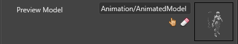
Note
The Asset Preview shows only the source animation you specify in the difference clip.
Use an additive animation
You can use additive animations with animations that use the same skeleton and skinned mesh.
In the Asset View (in the bottom pane by default), click Add asset.
Select Scripts > Animation Start.

AnimationStart is a startup script you can use to load animations into your model, including additive animations. For more information, see Animation scripts.
Recompile your project to apply the changes.
In the scene view, select the entity you want to animate.
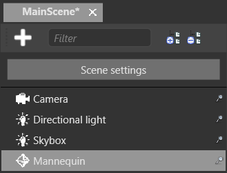
Note
To animate an entity, the entity must have a model component.
In the Property Grid (on the right by default), click Add component and choose Animations.
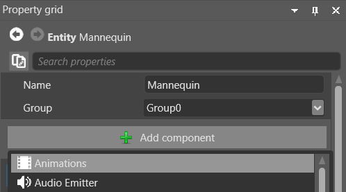
Game Studio adds an animation component to the entity.
Click Add component and choose the Animation Start script.
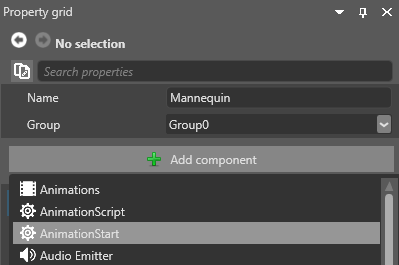
The script lets you customize a list of animations to be loaded into your entity.
In the Animation Start properties, next to Animations, click
 (Add).
(Add).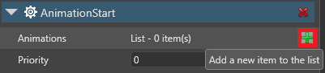
Next to Clip, specify the source animation you set in the difference clip.

Next to Add to Animations, click
(Add).Expand the animation properties. Next to Clip, specify the reference animation you set in the difference clip.
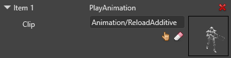
Under Blend Operation, select Additive.
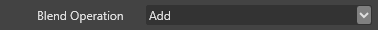
Repeat the steps to add as many animations as you need.
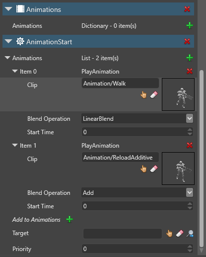